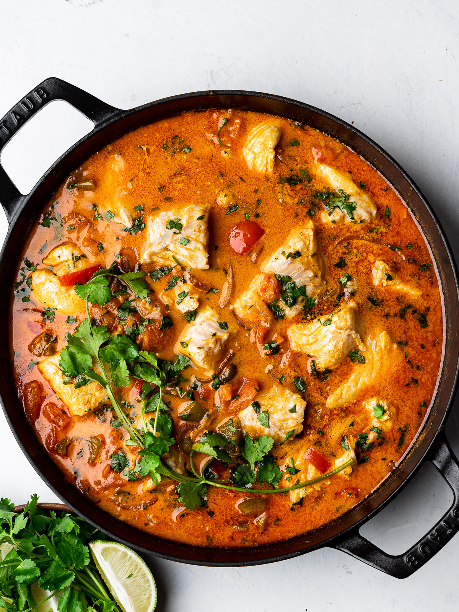

moqueca

Description
Moqueca is a brazilian seafood stew that pairs fish with chilis, lime, and coconut milk. It's
incredibly quick and easy to prepare, and intensely flavorful to boot. Serve over rice
with a little extra lime. Bom apetite!
Ingredients
- 1 pound firm white fish, such as cod, sea bass, or halibut, rinsed in cold water, pin bones
removed, cut into large pieces
- 1 pound shellfish, such as shrimp or scallops
- 4 cloves garlic, minced
- 2 limes, one zested and juiced
- salt
- black pepper
- 2 tablespoon coconut oil
- 1 medium onion, chopped
- 1 red bell pepper, chopped
- 1 yellow bell pepper, chopped
- 1 jalapeno pepper, chopped
- 1 tablespoon paprika
- 1 tablespoon tomato paste
- 2 cups chopped tomatoes
- 1/4 cup green onions, chopped
- 1 cup of cilantro leaves and tender stems
- 1 14 oz can of coconut milk (full fat)
- 1 tablespoon fish sauce
Steps
- Place the fish and shellfish in a large bowl. Add the minced garlic, and the juice and zest of
one lime. Sprinkle generously with salt and pepper. Massage lightly to coat all pieces well,
and set aside.
- In a large pot, heat the coconut oil over medium heat.
- Add the chopped onion, and cook a few minutes until softened.
- Add the bell peppers, jalapeno, and paprika. Sprinkle generously with salt and pepper (at least
1 tablespoon of salt). Cook a few minutes longer, until the bell pepper begins to soften.
- Add the tomato paste, and mix evenly through the vegetables. Stir in the chopped tomatoes and
green onions. Bring to a simmer and cook for 5 minutes. Stir in the cilantro.
- Nestle the fish and shellfish, along with the garlic and liquid left in the bowl, among the vegetables
so they are lightly covered.
- Pour the coconut milk over the fish and vegetables, and add the fish sauce. Bring to a simmer
and cook for 15 minutes until fish is cooked through.
- Taste and adjust the seasonings. It is likely you will need to add more salt or lime juice.
- Garnish with cilantro and enjoy with rice!
return to home